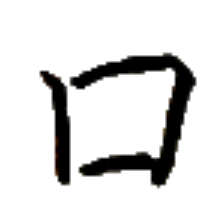
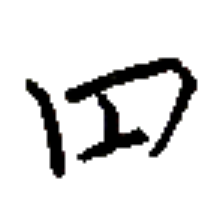
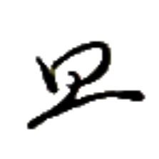
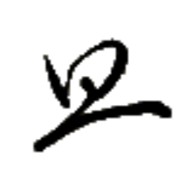
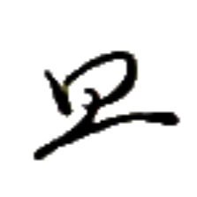
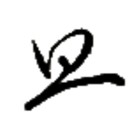
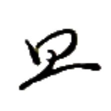
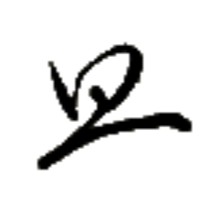

ヤㇺ→ (俗に) ヤウン→
【口】
[名詞]
(稀に)口
[動詞]
食べる、飲む、吸う
我口米
パイ⤴ヤㇺ→モウ→
【我口米】
私は米を食べる。
口物
ヤㇺ→ク·
【口物】
[名詞]
食べ物、食料
[動詞]
食べる、食事する
此倉口物貧
カー→リー→ヤㇺ→ク·ヘイ⤴
【此倉口物貧】
この倉庫は食べ物が少ない。
何時我等口物
ナン⤴カㇰ·パイ⤴ゲゥ·ヤㇺ⤴ク·
【何時我等口物】
いつ私たちは食事しますか？
何度私たちは食事しますか？
口水
ヤㇺ→ヌア⤴
【口水】
[離合詞]
飲む
[名詞]
飲み水、飲み物
我口清水
パイ⤴ヤㇺ→リン·ヌア⤴
【我口清水】
私は綺麗な水を飲む。
与我口水
トゥイ⤴パイ⤴ヤㇺ→ヌア⤴
【与我口水】
水をくれ。
口銭処
ヤㇺ→ズー→ホェ·
【口銭処】
[名詞]
飲食店、レストラン、食堂
口件之囲
ヤㇺ→ウォウ→ア·ピアー⤴
【口件之囲】
[名詞]
ダイニングルーム、食事室
口刀
ヤㇺ→ガウ⤴
【口刀】
[名詞]
歯、牙
口煙
ヤㇺ→ロウ→
【口煙】
[離合詞]
喫煙する
口皇草煙
ヤㇺ→タㇺ⤴コㇳ·ロウ→
【口皇草煙】
タムコㇳ (麻薬の一種) を吸う。
顔口
ザン→ヤㇺ→
【顔口】
[名詞]
口
名詞として口を指す場合は主にこちらを用いる。

オウ→
【平】
[名詞]
板
[状態動詞]
平らである
此道極平
カー→ポウ→キㇳ·オウ→
【此道極平】
この道はすごく平らだ。

ヘゥㇺ→
【美】【麗】
[状態動詞]
美しい、綺麗だ
美絵在於机
ヘゥㇺ→レゥㇰ→アイㇺ⤴イェ·セゥㇳ⤴
【美絵在於机】
綺麗な絵が机にある。
ヌㇺ→
【守】
[動詞]
守る
兵守国
カウㇰ⤴ヌㇺ→ズィㇷ゚→
【兵守国】
兵が国を守る。
大守処
マー→ヌㇺ→ホェ·
【大守処】
[名詞]
ヌママ（アイル共和国タウポ郡の大都市）


 
